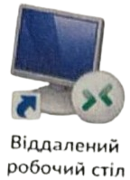
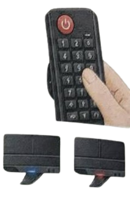
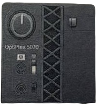
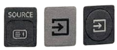
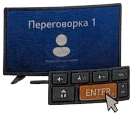

1
Відкрийте «Віддалений робочий стіл»
Знайдіть на робочому столі ярлик «Віддалений робочий стіл» та двічі натисніть на нього.
Знайдіть на робочому столі ярлик «Віддалений робочий стіл» та двічі натисніть на нього.
Ці облікові дані будуть використовуватися для підключення до 10.0.0.70.

Натисніть кнопку POWER на пульті дистанційного керування.

Натисніть кругову кнопку живлення на системному блоці ПК (Dell OptiPlex 5070).

Натисніть кнопку SOURCE на пульті.
На різних пультах кнопка може виглядати по-різному.
ПК переговорки
Ваш ноутбук

Натисніть Enter на клавіатурі для виходу зі сплячого режиму.
Виберіть обліковий запис
